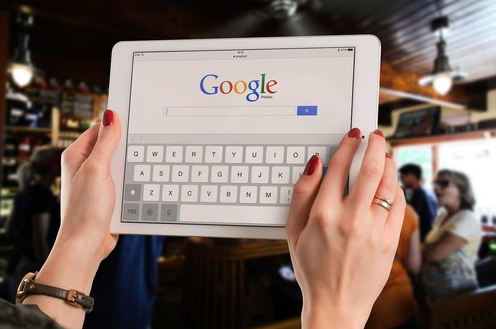

Există multe tipuri de dispozitive mobile, concepute pentru aplicații diferite.

Majoritatea dispozitivelor mobile sunt dotate cu procesoare rapide și memorii de dimensiuni mari, dar și cu metode de eficientizare a consumului de baterie.
O caracteristică particulară a dispozitivelor mobile este capacitatea mai mică de procesare și de stocare în comparație cu dispozitivele fixe (calculatoarele desktop) datorită dimensiunilor mici și simplificării componentelor hardware. De asemenea, acestea folosesc sisteme de operare și aplicații în conformitate cu resursele hardware disponibile.

De obicei, un dispozitiv portabil are o interfață afișată pe un ecran LCD, oferind o interfață touchscreen cu butoane digitale și fizice, altele și cu o tastatură fizică. Dispun de un sistem de operare, modalitate de stocare internă a datelor, suport pentru dispozitive de memorie externă și pot rula diferite tipuri de aplicații. Cele mai multe pot fi, de asemenea, echipate cu capabilități Wi-Fi, rețea celulară de date, Bluetooth, GPS, NFC, care pot permite conexiuni la Internet, și sincronizare cu alte dispozitive Bluetooth. De asemenea, camere foto/video integrate, playere media digitale, capacitatea de a plasa și recepționa apeluri telefonice, jocuri video.
Tipuri
- Smartphone
- Tableta
- Netbook
- Tableta internet
- Smartwatch
- E-reader
- Pager
- Media player portabil
- Aparat foto digital
- Dispozitiv internet mobil